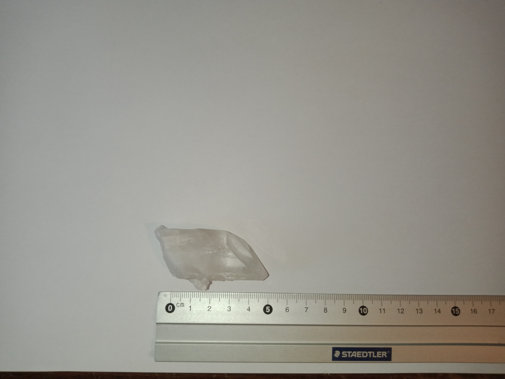
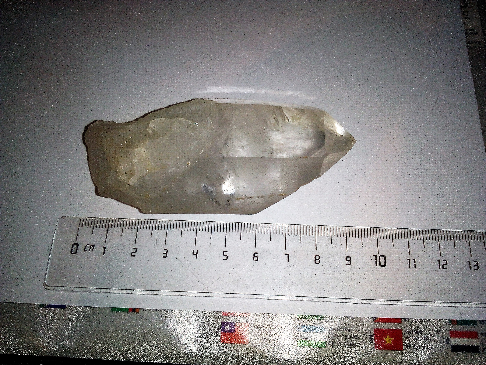
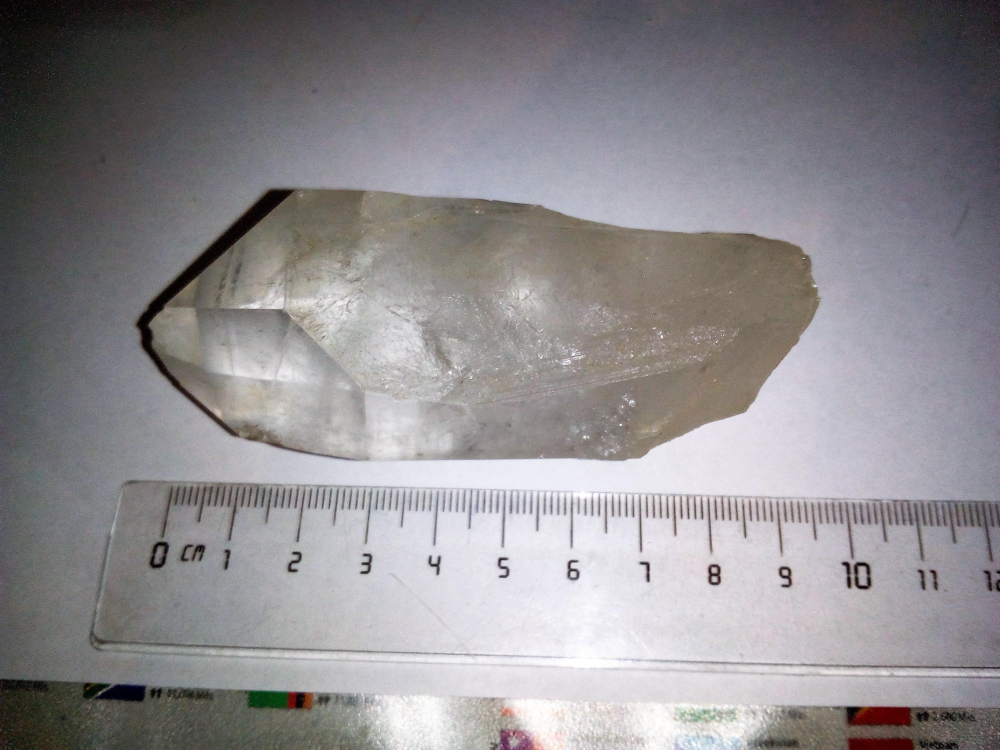
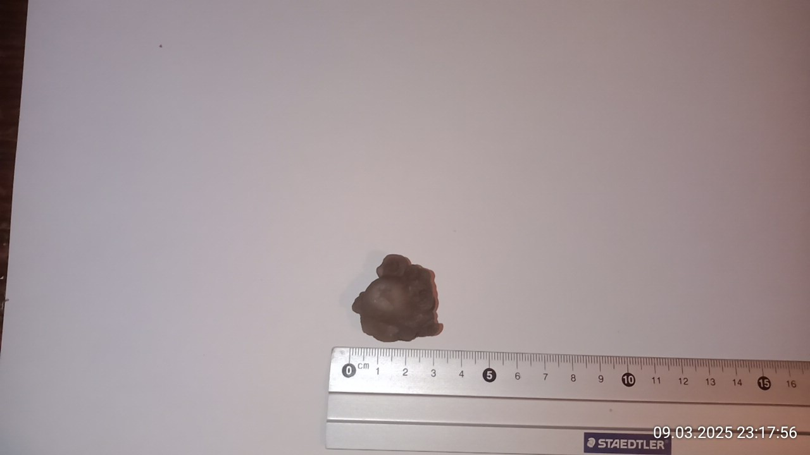
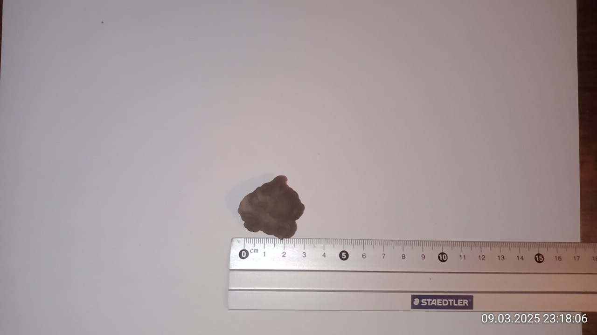
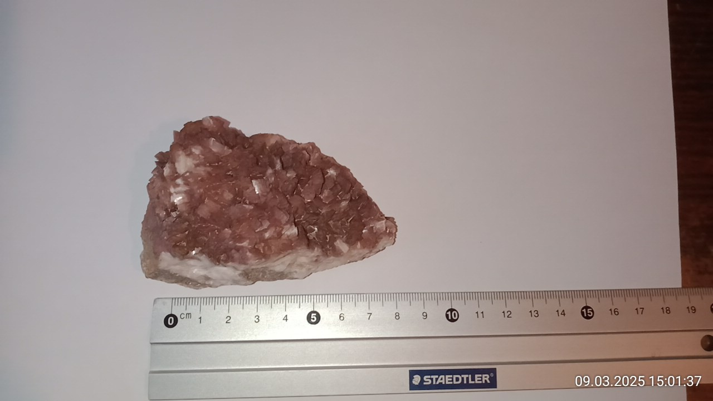
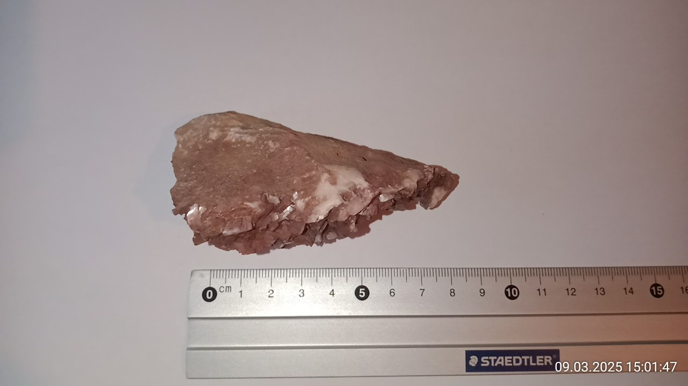
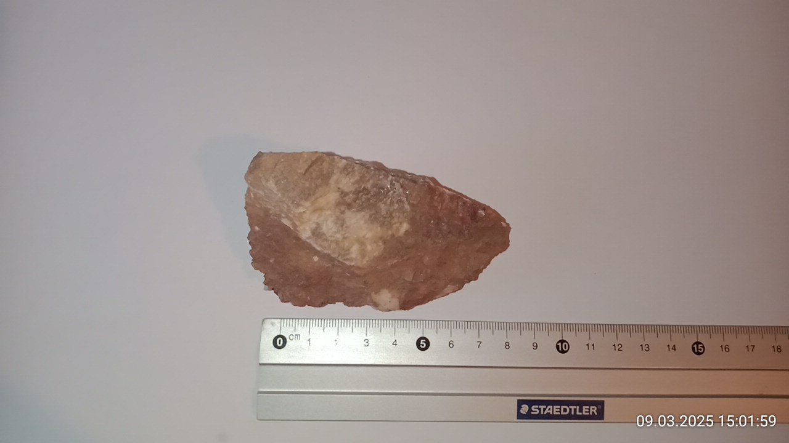
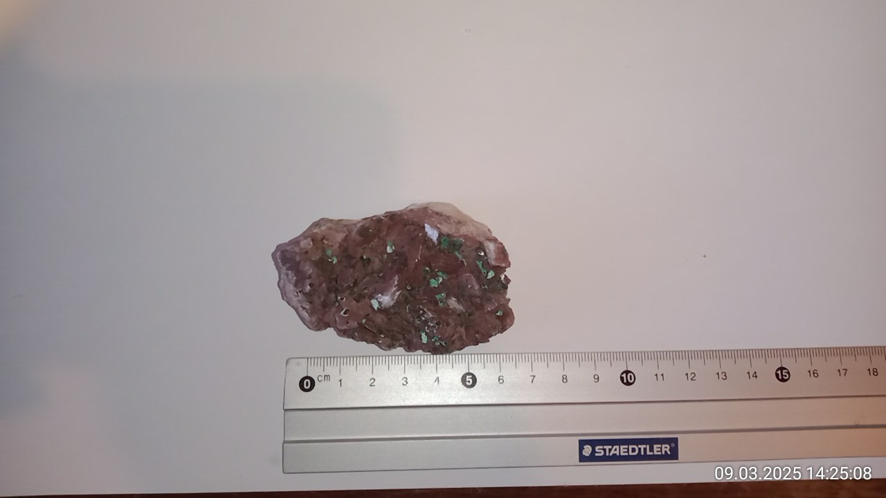
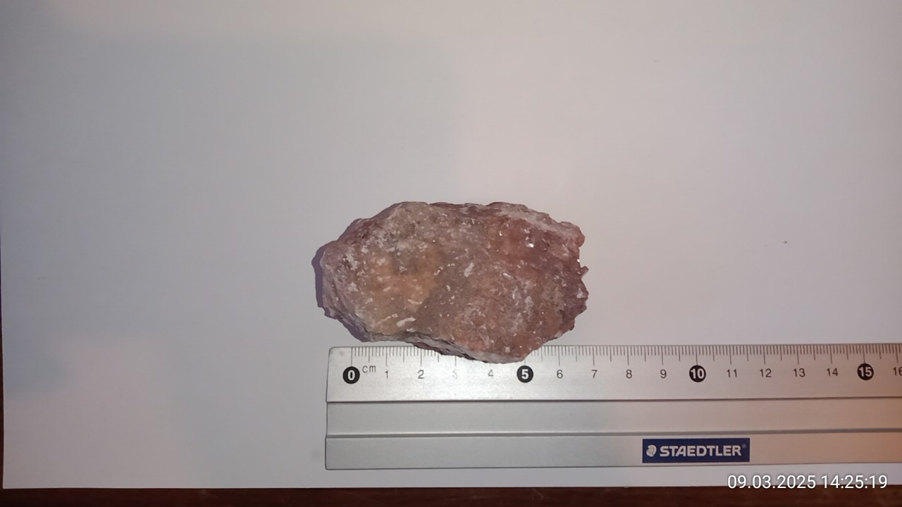

Meine Webseite
Mineralien von A bis D
[Startseite][Artikel][Astronomie][Spieleentwicklung][GAIA][Rechtliches]
{[Mineralien][Fossilien][Kunst][Leipzig][Biologisches]}
-[A-D][E-H][I-L][M-P][Q-T][U-X] [Y-andere]-
Bergkristall
| Katalognummer: | M0073 |
| Gewicht: | 40,3g |
| angebener Fundort: | Brasilien |
| Erwerbungsjahr: | 2022 |
Bilder:

Bergkristall grösser
| Katalognummer: | M0075 |
| Gewicht: | - |
| angebener Fundort: | - |
| Erwerbungsjahr: | - |
Weitere Informationen:
https://www.mineralienatlas.de/lexikon/index.php/MineralData?mineral=Bergkristall, abgerufen am 09.03.2025
https://de.wikipedia.org/wiki/Quarz#Variet%C3%A4ten, abgerufen am 09.03.2025
Bilder:


Chalcedon
| Katalognummer: | M0066 |
| Gewicht: | 19,2g |
| angebener Fundort: | Marokko |
| Erwerbungsjahr: | - |
Weitere Informationen:
https://www.mineralienatlas.de/lexikon/index.php/MineralData?mineral=Chalcedon, abgerufen am 09.05.2025
https://www.steine-und-minerale.de/mineralien/c/chalcedon.html, abgerufen am 09.05.2025
Bilder:


Dolomit
| Katalognummer: | M0058 |
| Gewicht: | 170,9g |
| angegebener Fundort: | Marokko |
| Erwerbungsjahr: | 2023 |
Weitere Informationen:
https://www.mineralienatlas.de/lexikon/index.php/MineralData?mineral=Dolomit, abgerufen am 09.03.2025
https://www.steine-und-minerale.de/gesteine/d/dolomit-gestein.html, abgerufen am 09.03.2025
Bilder:



Dolomit mit Malacit
| Katalognummer: | M0057 |
| Gewicht: | 126,5g |
| angegebener Fundort: | Marokko |
| Erwerbungsjahr: | 2023 |
Weitere Informationen:
https://www.mineralienatlas.de/lexikon/index.php/MineralData?mineral=Dolomit, abgerufen am 09.03.2025
https://www.mineralienatlas.de/lexikon/index.php/MineralData?mineral=Malachit, abgerufen am 09.03.2025
https://de.wikipedia.org/wiki/Dolomit_(Gestein), abgerufen am 09.03.2025
https://www.steine-und-minerale.de/gesteine/d/dolomit-gestein.html, abgerufen am 09.03.2025
Bilder:


Aktualisiert: 11.08.2025